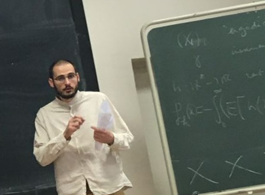

I am an assistant professor at Sorbonne Université in the Laboratoire de Probabilités Statistique & Modélisation, Paris.
Previously, I was a maths teaching assistant at INSA Toulouse (2024 - 2025) and a postdoctoral research fellow at CREST - ENSAE, IP Paris (2022 - 2024).
I obtained my PhD from Université Paul Sabatier at Institut de Mathématiques de Toulouse in Oct. 2022, under the supervision of Franck Barthe (Institut de Mathématiques de Toulouse) and Max Fathi (Université Paris Cité).